Take a history without forgetting a single question.
HistoryOsis Technologies builds clinical records that teach as they record. Our app puts every history question on the screen as a tap, flags dangerous vitals and drug allergies as you type, and keeps working with no internet. We are building it for medical schools first, with teaching hospitals and clinics to follow.
No sign-up. No internet needed after the first load. Records stay on the device they were typed on. Beta, in active testing with students.
Try it: a patient with chest pain
These are the app's real questions. Tap an answer. For symptoms, tap once for present and twice for absent.
Chest Pain: sudden onset, crushing, tight / pressure, radiating to left arm, jaw, severity 8/10. Associated: sweating, nausea, breathlessness. No syncope.
The app has 76 complaints like this one. Screens on this page show fictional patients.
Clinical content already built in
- presenting complaints, each with tap-to-answer questions
- 76
- question groups across those complaints
- 513
- review-of-systems symptoms
- 63
- examination systems with 98 finding fields
- 13
- investigations in 11 categories
- 138
- treatments, 33 with drug-allergy checks
- 108
One app, three ways to use it
Medical schools use it to teach. Small clinics use it as their patient record. Hospital wards use it on rounds. Pick the one that sounds like you.
Put the same checklist in every student's pocket.
Students practise on their own phones, offline, with the questions a good history needs already laid out. Supervisors see what is missing and comment on the record itself.
- 76 presenting complaints with tap-to-answer questions, and red-flag lists for the dangerous ones, so no question is forgotten.
- A completeness checklist for every section shows what the student has not covered yet.
- Reviewer mode: comment on any section, mark a record ready, then approve and lock it.
- A sign-off block records student name, roll number, year, ward and supervisor.
- A case log you can download as a spreadsheet (CSV) to show the cases a student has seen.
- Your faculty's own complaints, questions and templates go into one content file.
In development: an ordered examination checklist inside each body-system card (inspection, palpation, percussion, auscultation), with a "steps missed" line for supervisors. Cardiovascular, respiratory and abdomen come first, and each system is reviewed by a named clinician before we call it final. After that: a history coverage score, practice cases with an OSCE timer, and a student logbook.
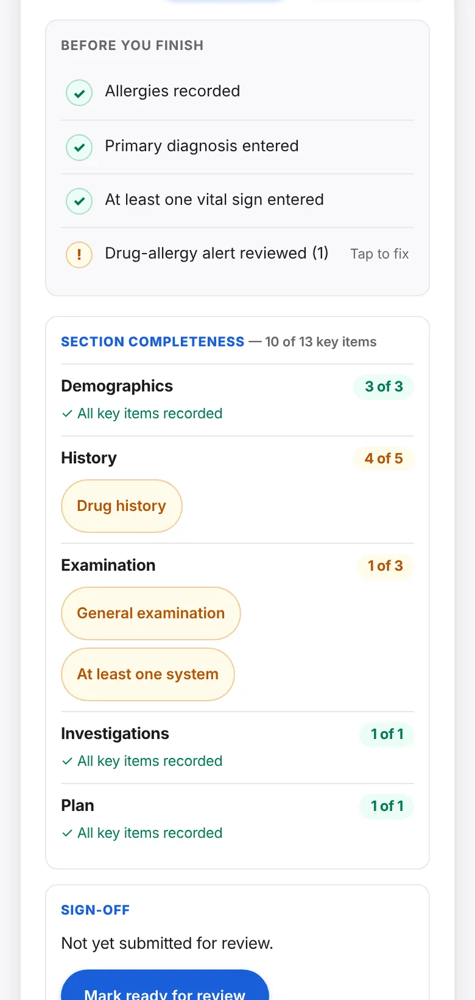
A proper patient record on the phone or computer you already have.
There is no server to set up and no monthly login. Open the app, take the history, save the record, then print it or copy it into another system.
- A structured record from demographics to treatment plan, saved on the device and available offline.
- Returning patient? Load the stable history from the earlier record with the same MR number, then reconfirm allergies and medicines.
- Search by name, MR number, bed, diagnosis or tag. Mark records Draft, Complete or Discharged.
- Print a full or compact A4 record, share a text summary, or copy it as EMR text.
- Version history, a recently deleted view with restore, and backup reminders with a one-tap backup file.
- Installs on the home screen like any other app.
Today: records live on one device. Sharing records between devices and staff is on the roadmap. Use device encryption and a screen lock on any phone that holds real patient records.
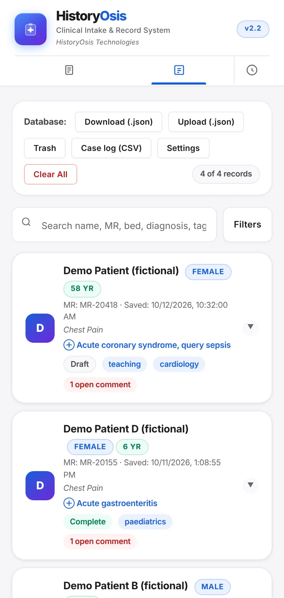
Faster, safer ward rounds, one bed at a time.
Round view and early-warning scores for the ward, and sign-off for the record. Hospital-wide deployment is what we are building with pilot partners.
- Round view with progress notes (SOAP) that show yesterday's vitals, examination and plan.
- NEWS2 score with risk band and suggested response, saved with the record and the printout.
- Shock Index, and a normal, abnormal or critical tag on every vital sign.
- An allergy banner, drug-allergy warnings and a before-you-finish checklist.
- Ready for review, approved and locked states, with a time-stamped log.
- Nothing depends on a connection, so Wi-Fi dead spots do not stop documentation.
Planned with partners: accounts and roles, one server that we host or that runs inside your hospital network with OIDC or SAML sign-in, encrypted storage and FHIR export. These come after the teaching product is strong, and we want hospital teams to shape them.
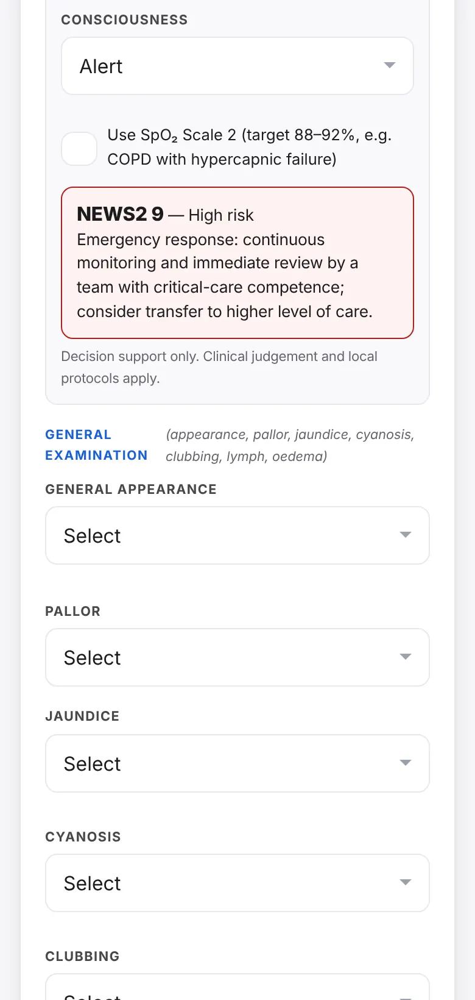
One record, seven sections, A to G
The form follows the order a clinician thinks in. Each section opens and closes, and the app shows how complete the record is as you go.
Demographics
Patient ID and admission details.
Structured history
Presenting complaints with tap-to-answer HOPI, review of systems, comorbidities, past medical and surgical history, family and social history. Child and pregnancy sections appear only when they apply.
Examination
Vital signs with BMI, Shock Index and NEWS2, general findings, and 13 body systems.
Investigations
Bedside tests, laboratory, imaging, endoscopy and biopsy, with results.
Treatment plan
Diagnosis, medical, surgical and conservative items, monitoring, discharge criteria and counselling points.
Signing credentials
Who took the history: role, name, roll number, year, ward and supervisor.
Review and save
The written summary, print and copy options, reviewer comments and sign-off.
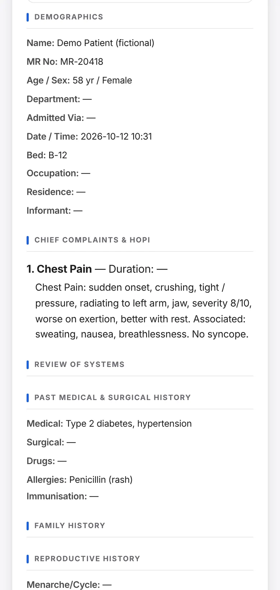
What the app does at the bedside
Every feature here is in the app today. All screens show fictional patients.
Every question on the screen
Each of the 76 presenting complaints opens a set of questions as taps: onset, character, radiation, severity, duration, triggers, and what is present or absent. Nothing to remember and nothing skipped, and the record reads as if a clinician wrote it.
- Five answer types: pick one, pick several, a 0 to 10 scale, a duration, and present or absent.
- Red-flag lists for 15 complaints, folded away until you need them.
- Search for a complaint, pin favourites and reuse recent ones.
- Eight templates, such as a chest pain work-up or a sepsis screen, add the usual complaints, examination, tests and plan in one tap. Save your own.
- Returning patient: carry stable history forward from an earlier record.
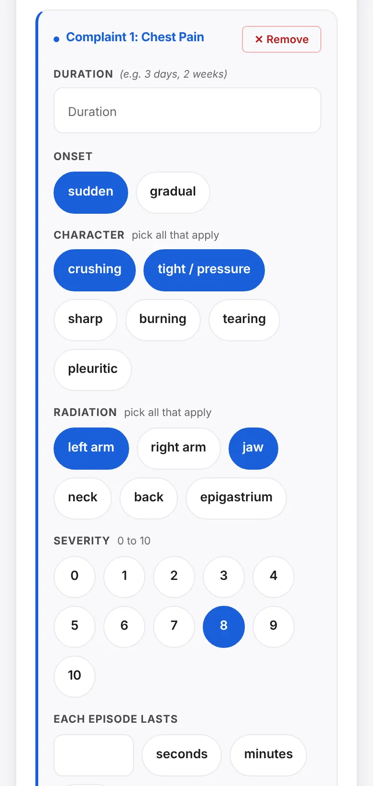
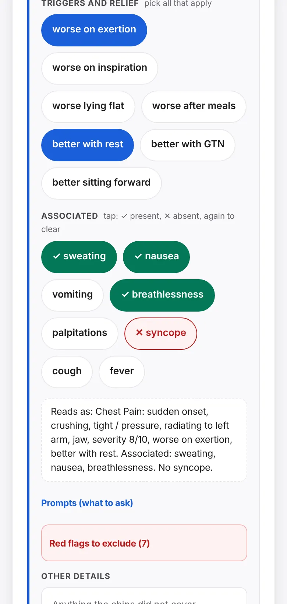
See the sick patient sooner
As vitals are typed, each gets a plain-word tag: normal, abnormal or critical. NEWS2 adds up the score on the Royal College of Physicians chart, shows the risk band and the suggested response, and saves it with the record.
- Reads vitals the way people type them: 96 bpm, 97%, 5'10", 150 lbs.
- Respiratory rate, SpO₂ (including Scale 2), blood pressure, pulse, temperature and GCS.
- Shock Index and BMI worked out for you.
- Tags use words as well as colour, so they work for everyone.
Decision support only. Every check is advisory and never blocks saving. Clinical judgement and local protocols apply.
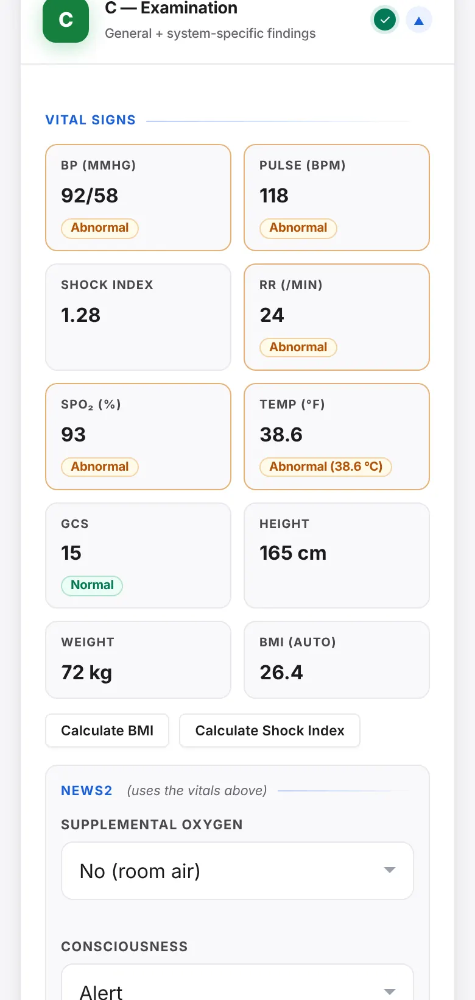
Catch the allergy before the prescription
If allergies have not been recorded, a banner says so. If a chosen medicine clashes with a recorded allergy, the warning appears on that medicine and asks you to confirm that you checked.
- 33 medicines mapped to drug groups, including related groups.
- 16 condition cautions, such as an anti-inflammatory in kidney disease or alongside an anticoagulant.
- A "Before you finish" checklist: allergies, diagnosis, vitals, and confirmation of carried-forward allergies and medicines.
- The clinician stays in charge. Warnings never stop a record from being saved.
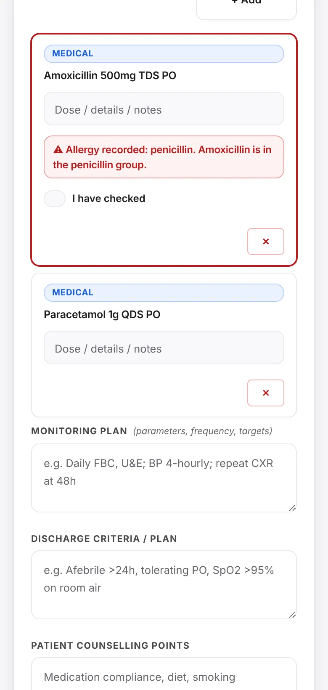
From bedside to record in one tap
The form turns into a written summary, an A4 printout or plain text for another system. Records stay easy to find and hard to lose.
- Summary view, with print or PDF in full and compact layouts.
- Share a text summary, or copy the record as EMR text.
- Search, filter and tag. Status: Draft, Complete or Discharged.
- The last 10 versions of each record are kept. Deleted records wait in a trash until you restore them.
- Download a backup file, and upload one with a preview before anything is merged.
Review and sign-off built in
Supervisors and consultants comment on any section of the record. When the author marks it ready, the reviewer approves it and the record becomes read-only until someone reopens it. Every step is logged with name, role and time.
- Comments live inside the record, under the section they are about.
- Open comments show on the records list, so nothing is missed.
- Approval warns if comments are still open.
- Works for teaching rounds and for ward sign-off.
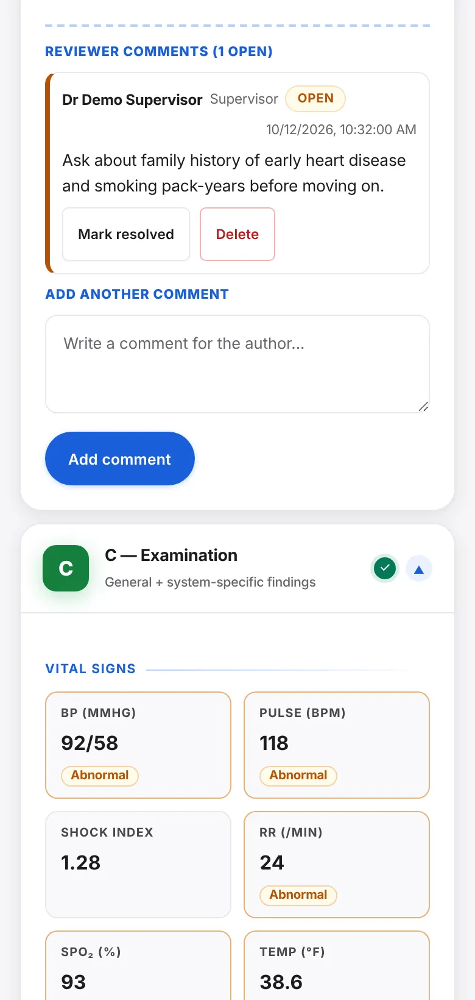
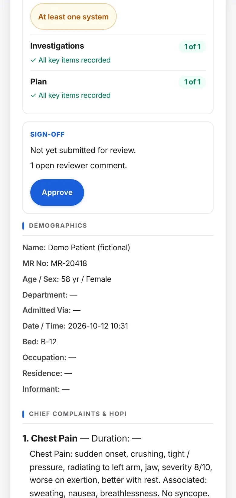
Comfortable on every shift
Light, dark or automatic theme for night shifts, three text sizes, and labels for screen readers and keyboards. It runs on phones, tablets and computers, and installs to the home screen.
- Works offline after the first load.
- PIN lock and privacy screen for a device left on a ward desk.
- Content and calculations checked by 120 automated tests that run in any browser.
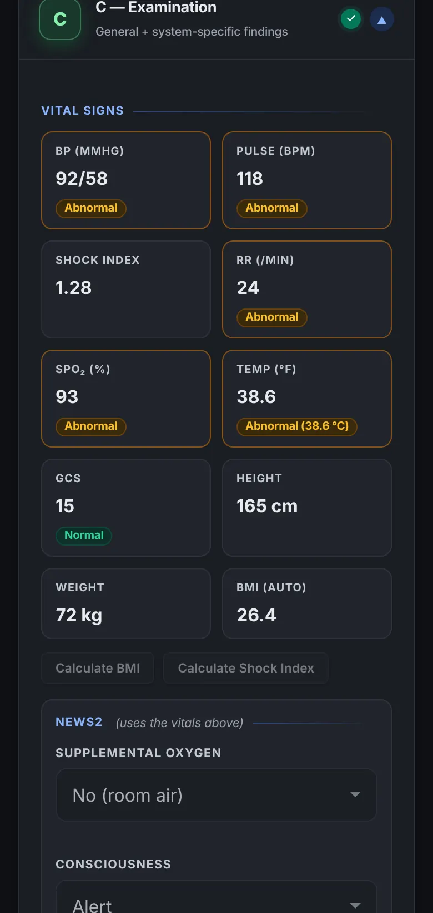
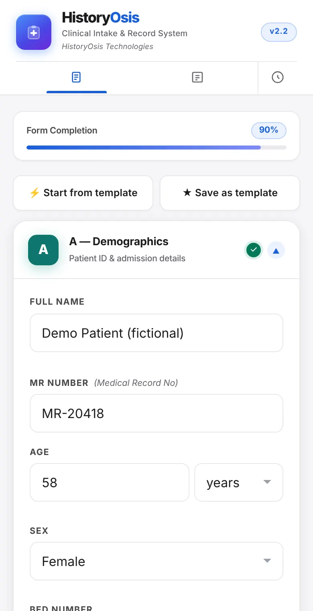
Patient records stay on the device
The app has no patient database of ours behind it, and it loads no outside services while you work.
Nothing is sent to us
Records are saved in the browser on the device where they were typed. Moving a record to another device is a file you choose to download and upload.
Offline by design
After the first load, the app and all its medical content are kept on the device. No connection is needed to take a history or save a record.
Locks and backups
A PIN lock and privacy screen hide records when the screen is left open. Backups are files you control, with reminders when one is due.
Be clear about what is not here yet. Encryption of stored records and shared hospital databases are not in the app today; both are on the roadmap. Until they are, use device encryption and a screen lock on any device that holds real patient data. Institutions should use fictional cases for teaching. HistoryOsis is documentation and decision-support software. It is not a diagnostic device.
What works now, and what we build next
We would rather show you the gaps than hide them. Education comes first, then institutions, then wider clinical depth. Partners help decide the order inside each phase. Last updated October 2026.
Working now
- History with tap-to-answer questions76 complaints, red flags, templates and carry-forward from earlier records.
- Vitals, NEWS2 and drug-allergy checksAdvisory warnings that never block saving.
- Records that are easy to useSummary, print, EMR text, search, tags, versions, trash and backups.
- Supervisor review and sign-offComments, ready, approved and locked, with a log.
- Offline install, dark mode and accessibilityHome-screen app, three text sizes, keyboard and screen-reader support.
In development now
- Examination checklistOrdered steps in each system card, each marked done, normal, abnormal or not examined, feeding the findings and the written summary. Three systems first.
- "Steps missed" for supervisorsShown in the completeness checklist and the reviewer view.
- Clinician review of every systemStep lists are cited and written from standard teaching. Nothing ships as final until a named clinician has signed off that system.
Examination guidance
So a student never forgets an examination step.
- Step checklist in each of the 13 systems, three systems first
- Steps feed the findings, so nothing is typed twice
- Step-by-step coach screen and Guide, Practice and Quick modes to follow
Learning and assessment
What a university needs to teach with it.
- History coverage score: which expected questions were never asked
- About 20 fictional practice cases with an OSCE timer and marking checklist
- Short recall quizzes on red flags and examination steps
- Student logbook with supervisor sign-off and a portfolio report
Foundations for institutions
So a whole school or hospital can run it.
- UK and US settings for units, spelling, drug names and early-warning scores
- Encrypted storage with a passphrase
- Accounts and roles for students, supervisors and admins, with hospital single sign-on (OIDC or SAML)
- One server, hosted by us or inside your network, with offline sync and an audit log
- Cohort dashboard for teachers, and a browser content editor with clinician sign-off
- Retention, export and deletion on request
Clinical depth
What makes it a fuller record for clinics and hospitals.
- More specialties: paediatrics, obstetrics, psychiatry, emergency
- Structured lab results with reference ranges
- Problem list and a searchable ICD-10 list
- Discharge summary and referral letter
- FHIR export, Urdu and bilingual output, tablet and ward-list layouts
- Tamper-evident audit trail and electronic signature
Education first
Medical students and universities are our first customers. Clinics and teaching hospitals follow once the teaching product is strong.
No AI for now
We are not building an AI virtual patient, AI drafting or AI coding at this stage. ICD-10 will be a searchable list, and the clinician always chooses the code.
Clinicians sign off content
We draft and cite. A named clinician reviews each body system before it is shown as final. Until then it is labelled as draft.
Plans are plans, not promises of dates. Anything not listed under "Working now" is not in the app today.
UK first, built so the US is not a rewrite
We are starting in the UK and keeping units, spelling, drug names, date formats and the early-warning score switchable for each organisation, so another market is a setting and not a rebuild.
United Kingdom
- UK GDPRData protection for any personal data we hold.
- MHRAAssessment of whether the software counts as a medical device.
- NHS clinical safety, DCB0129 and DCB0160Safety case and hazard log for health IT.
- NHS Digital Technology Assessment Criteria (DTAC)The checklist NHS buyers use for digital tools.
United States
- HIPAAWith business associate agreements where we host real patient data.
- FDA clinical decision support guidanceFor checks such as early-warning scores and allergy alerts.
- FERPAStudent education records.
- WCAG 2.2 AA and a VPATAccessibility documentation that universities ask for.
What this list is. These are the standards we are designing towards, not certifications we hold. We will confirm with a regulatory adviser which apply before any pilot, and real-patient use by institutions stays switched off until that work is done. In the meantime the checks are advisory, they never block saving, and teaching uses fictional cases.
Start with a small pilot
One class, one skills lab, one clinic or one ward is enough to learn what works.
Try the app
Open it on your phone. There is no account to create.
Tell us what you teach or treat
We can add your complaints, questions, checklists and templates, and your faculty can review the examination steps with us.
Run it with one group
You tell us what slows people down. That decides what we build next.
Bring HistoryOsis to your institution
Write to us with your institution, who would use it, and what you want to improve. We reply personally.
Questions institutions ask
Does it need the internet?
Only to load it the first time, and again after an update. After that it runs fully offline, including all medical content.
Where is patient data stored?
In the browser on the device where it was entered. Nothing is sent to HistoryOsis Technologies. You can download a backup file and upload it on another device.
Can a clinic use it as its EMR today?
For a single-device record, yes: structured notes, print, EMR text, search and backups. It does not yet share records between devices or staff, and storage is not encrypted by the app. Institutions should keep teaching to fictional cases until encryption, accounts and the compliance work are done. Hospitals that need shared records should talk to us about a pilot.
Is it a medical device?
We build it as documentation and decision-support software. Its checks are advisory, they never block saving, and the clinician stays responsible for every decision. Because the early-warning score and allergy alerts come closest to advising a clinician, we will confirm the regulatory position with an adviser before any pilot that uses real patient data.
Will you add AI?
Not at this stage. We are not building an AI virtual patient, AI drafting or AI diagnosis coding. We are putting our effort into examination guidance, assessment tools and institution features first.
Can we host it ourselves?
That is planned. The same server is designed to run as our hosted service or inside a hospital network, with sign-in through your OIDC or SAML provider. It is not available yet; the app today runs on each device with no server.
Which countries do you support?
We are starting with the United Kingdom, with US settings designed in from the start. The app is in English. Units, drug names and early-warning scores are being made switchable per organisation. Urdu and bilingual output are on the roadmap.
Can we use our own complaints, checklists and templates?
Yes. All medical content sits in one readable file, with a guide for adding complaints, examination systems, investigations and templates. When the app starts it checks that file and says in plain words what is wrong, instead of failing silently.
How is it tested?
A page of 120 automated checks covers the calculations (BMI, Shock Index, NEWS2), data validation, file import and record migration. It runs in any browser. The app is also tested on phone-sized screens, in dark mode and with a keyboard.
What does it cost?
We are choosing our first pilot partners now. Write to us with your institution and what you need, and we will come back with options.
About HistoryOsis Technologies
HistoryOsis Technologies builds clinical records and examination training for medical education. We started with history taking because everything else in a record depends on it, and we are adding examination guidance, assessment tools and institution features next.
The company is led by its founder, Ehsan Ellahi (RMU49).
- Company
- HistoryOsis Technologies
- Founded
- December 2025
- Sector
- Healthcare and life sciences: medical education technology
- Customers
- Medical schools, universities and teaching hospitals (business to business and higher education)
- Product stage
- Beta, live prototype in active student and clinical testing
- Funding
- Bootstrapped
- Team
- 1 to 5 people
- Website
- historyosis.tech
- Contact
- founder@historyosis.tech